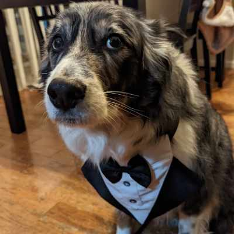
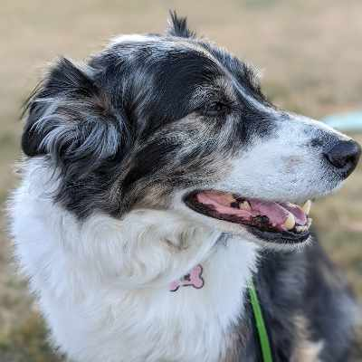

Candles lit in his memory: Loading...
His Story
Swarley first moved in with me on August 21, 2017, back at my old Denver apartment. We had known each other off and on for many years before that, as he moved between members of our family. He was born in Las Vegas on June 22, 2012, where my sister, Lauren, picked him up from a family. He was the runt of his litter, but he quickly grew into a large and handsome boy. Well-traveled in his early years, he moved around often before finally settling in to spend the rest of his days in a stable home.
He always loved spending time with people, and he deeply loved his family. Even in his later years he was full of so much joy and energy, every single day, still finding the power to zoom up and down the stairs, sometimes soaring through the air into a hard landing. He was incredibly smart, able to solve complex puzzles and remember the solutions later, and he was famously food-motivated (and fed well his whole life).
I started caring for him in his midlife, and since I had never learned how to look after a dog before, there were a few bumps in the road as I figured out how to handle him, where the good walk spots were, and, uhhhh, how to feed him correctly. He had some very good days when bologna was on the menu, and he may have put on a few pounds. After losing his plus-sized status, though, he stayed remarkably fit, and he expected his two walks a day, no matter the weather or our moods.
He loved sniffing the trails along the park so much that he would move at a snail's pace, scanning every inch of the path. He grazed like a cow on the tall grass, which earned him a fitting nickname: Cow. He loved cuddling on the couch too, but only a little. That kind of affection was strictly limited-time.
Swarley was an integral part of the home. When I walked through the hallways and rooms, he followed me with such regularity that his movements became part of mine. He really was our shadow, always keeping a comfortable distance where he could watch both you and the doorway, forever wanting to keep everyone safe.
Swarley was loved by people all over the world. He collected fans and family from everyone he met, as this very page shows. He was always sweet, and he tried his best to care for the people around him. His face and likeness live on across so much artwork and so many photos. Even now that he's gone, he will be remembered every single day, by so many who loved him.
A Few of His Favorite Things
- His hedgehog plush
- Zooming up the stairs past you
- Eating whatever he was given
- Treats snagged from the garbage bins
- Sniffing every inch of the park
His Life
- June 22, 2012 The day Swarley came into the world, in Las Vegas.
- August 21, 2017 The day Swarley came home to Denver.
- June 22, 2018 His first birthday party in Denver, celebrated with rare steak.
- May 21, 2026 Crossed the rainbow bridge, deeply loved.
Have a favorite photo, a piece of art, or a memory of Swarley?
Share a photo Leave a memory See the gallery